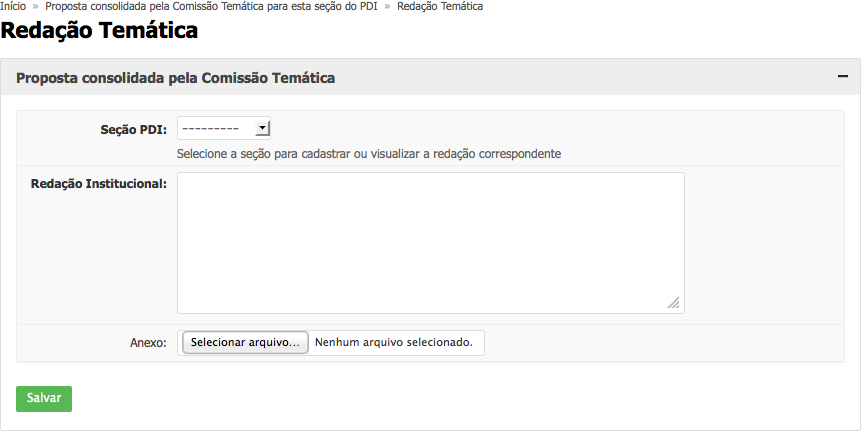

Servidor previamente cadastrado com o perfil de acesso a uma Comissão Temática de um PDI.
As Comissões Temáticas produzirão a redação definitiva de cada temática através da opção “Redação Temática” pelo menu do SUAP, em Desenvolvimento Institucional > PDI, disponível a todos os membros da respectiva Comissão.
Esse texto deverá ser redigido na caixa de texto “Redação Institucional”, cuja capacidade de caracteres não é limitada. 